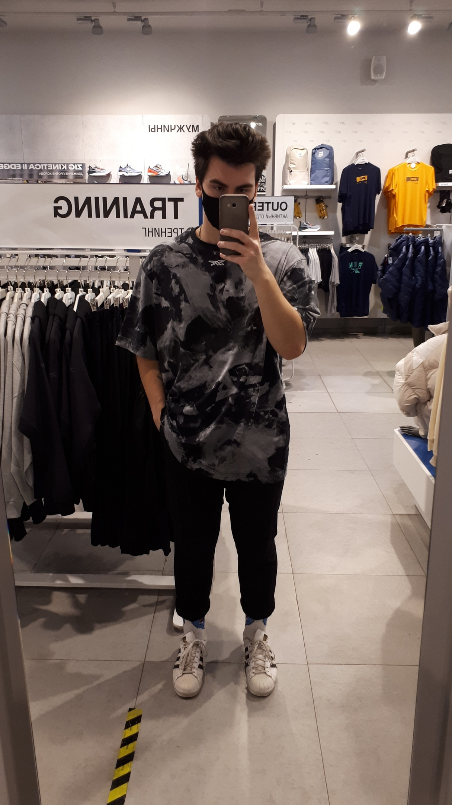

Здесь пожалуй оставлю свою краткую биографию.
Родился в обычном городе,средней населенности, в городе Архангельск. Был обычным ребенком,пошел в школу.В школе из интересов были компьютерные игры и больше ничего толком.
После школы поступил в колледж.Там уже я приобрел другие интересы в виде любви к одежде и татуировкам, потом подключилась любовь к спорту. Пробовал себя в различных сферах заработка, все безуспешно.
После окончания колледжа решил продолжить обучение,поступил в Университет в городе Ульяновск.
